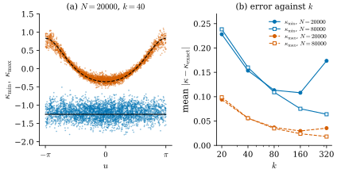
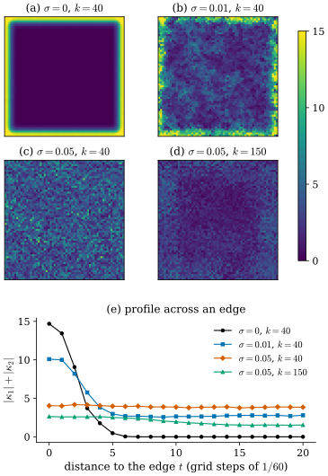

48.6 Implementation and Numerical Illustrations
Goals
- point cloud varifold에서 \(\varepsilon\)-WSFF\(^\perp\)와 그 \(B\) tensor를 원자의 합으로 쓰고(Proposition 48.6.1), 인쇄된 식에 빠진 \(1/\varepsilon\)을 복원할 수 있다.
- tensor를 normal과 contract해 tangent plane에 제한하고 eigenvalue를 읽는 절차와, 그때 남는 부호의 모호함을 설명할 수 있다.
- PCA plane, mass, 이웃 개수로 정하는 \(\varepsilon\)을 합쳐 point cloud의 principal curvature를 30줄의 NumPy로 계산할 수 있다.
- 논문의 Figure 1–5가 보여 주는 것과 보여 주지 않는 것을 말하고, torus와 cube에서 이웃 개수 \(k\)와 noise가 오차를 어떻게 바꾸는지 읽을 수 있다.
Prerequisites
- Proposition 48.2.1: \(B\)에서 principal curvature를 읽는 법
- Definition 48.5.7과 (48.5.11): \(\varepsilon\)-WSFF\(^\perp\)와 그 중심화한 꼴. Theorem 48.5.9와 Exercise 48.5.4: 속도 \(1/\varepsilon\)과 이웃 개수를 고정할 때의 bound
- Definition 46.4.6(point cloud varifold), Definition 47.7.1(같은 계산을 mean curvature에서 한 것)
Motivation
Section 48.5는 \(\varepsilon\)-WSFF\(^\perp\)가 “이웃의 plane과 중심의 plane의 차를 kernel 도함수로 평균한 것” (48.5.11)이고, 데이터가 \(V\)에 가까우면 \(1/\varepsilon\)의 속도로 \(V\)의 흐린 값에 가깝다는 것을 보였다. point cloud에서는 적분이 원자의 합이 되고, coefficient \(c^V(x_{l_0})\)가 그 점의 plane \(P_{l_0}\)으로 정확히 알려져 있다. 그래서 linear system을 풀 필요도 없다. 실제 계산에 남는 질문은 셋이다. plane \(P_l\)은 데이터에 없으니 어떻게 구하는가, mass \(m_l\)과 scale \(\varepsilon\)은 무엇으로 하는가, 그리고 \(n^3\)개의 수에서 어떻게 principal curvature 두 개를 꺼내는가. 논문 §7은 이 셋에 세 쪽으로 답하고, 다섯 장의 그림을 보인다. 그림은 정성적이다. 이 절은 공식을 정확히 적고, 정답을 아는 모양에서 수치를 재현한다.
Point Cloud Formulas (Section 7.1)
point cloud varifold \(V = \sum_{l=1}^Nm_l\,\delta_{x_l} \otimes \delta_{P_l}\)(논문의 (7.1), Definition 46.4.6)의 원자 \(x_{l_0}\)를 고정하고, 다른 원자와 위치가 겹치지 않는다고 하자. 다음과 같이 줄여 쓴다.
- \(r_l = \abs{x_l - x_{l_0}}/\varepsilon\), \(u_l = (x_l - x_{l_0})/\abs{x_l - x_{l_0}}\)
- \(w_l = P_lu_l\), \(D_l = P_l - P_{l_0}\)
- \(Z = \sum_lm_l\,\xi(r_l)\)
kernel은 논문대로 \(\rho(t) = e^{-1/(1 - t^2)}\)(\(0 \le t \lt 1\), 정규화 상수는 생략)과 natural 짝 \(n\xi(t) = -t\rho'(t)\)(논문의 (6.7))이다. 그러면 \(C_\xi/C_\rho = d/n\)이다(Proposition 47.5.2).
Proposition 48.6.1 (\(\varepsilon\)-WSFF\(^\perp\) of a point cloud). 위의 기호로
이고, \(B^k_{ij} = \tfrac12(A_{ijk} + A_{jik} - A_{kij})\)로 정한 \(B\) tensor는
이다. 합은 모든 \(l\)에 대한 것이지만 \(r_l \ge 1\)인 항과 \(l = l_0\)인 항은 \(0\)이다. [BLM22, §7.1, (7.2)]
Proof. 정규화한 kernel을 \(\rho_\varepsilon(z) = \rho(\abs{z}/\varepsilon)/(c_\rho\varepsilon^n)\), \(\xi_\varepsilon(z) = \xi(\abs{z}/\varepsilon)/(c_\xi\varepsilon^n)\)이라 하자. natural 짝에서는 부분적분으로 \(c_\xi = c_\rho\)이다(Exercise 48.6.1). \(\nabla\rho_\varepsilon(z) = \rho'(\abs{z}/\varepsilon)\,z/\abs{z}\,/(c_\rho\varepsilon^{n+1})\)이므로 (48.5.2)에 \(V\)를 넣으면
\[ \begin{aligned} &(\delta_{ijk}V*\rho_\varepsilon)(x_{l_0}) \\ &= \frac{1}{c_\rho\varepsilon^{n+1}}\sum_lm_l\,(P_l)_{jk}\,\rho'(r_l)(w_l)_i \end{aligned} \]
이고, 분모는 \((\norm{V}*\xi_\varepsilon)(x_{l_0}) = Z/(c_\xi\varepsilon^n)\)이다. (48.5.3)의 비에서 \(c_\rho = c_\xi\)와 \(\varepsilon^n\)이 약분되고 \(1/\varepsilon\)이 남으며, \(-C_\xi/C_\rho = -d/n\)을 곱하면 (48.6.1)이다. 원자 \(x_{l_0}\)에서는 \(\nu_{x_{l_0}} = \delta_{P_{l_0}}\)이므로 \(c^V(x_{l_0}) = P_{l_0}\)이고(Exercise 48.5.2), (48.5.11)의 \(S_{jk} - c^V_{jk}(x)\)가 \((D_l)_{jk}\)가 되어 (48.6.2)이다. (48.6.3)은 (48.6.2)를 \(B\)의 정의(Proposition 48.3.8)에 넣은 것이다. \(l = l_0\)에서는 \(\rho'(0) = 0\), \(\xi(0) = 0\)이고 \(r_l \ge 1\)에서는 \(\rho' = \xi = 0\)이다. \(\square\)
이 명제가 말하는 것은 단순하다. 점 \(x_{l_0}\)의 curvature tensor는 반지름 \(\varepsilon\) 안의 이웃마다 “plane이 얼마나 다른가”(\(D_l\))와 “그 이웃이 어느 방향에 있는가”(\(w_l\))를 곱해, kernel 도함수 \(\rho'(r_l) \le 0\)으로 가중해 더한 것이다. 가까운 이웃의 plane 차이를 거리로 나눈 차분 몫의 평균이다. (47.7.1)의 mean curvature 공식에서 normal projection \(\Pi_0P_ju_j\) 자리에 \((D_l)_{jk}(w_l)_i\)가 들어간 것과 같은 구조다. 실제로 \(j = k\)로 contract하면(\(\sum_q(D_l)_{iq}(w_l)_q\)) 그 공식으로 돌아간다(Exercise 48.6.2).
Remark 48.6.2 (from the tensor to principal curvatures). 논문 §7.1은 (48.6.3)에서 다음 세 단계로 principal curvature를 꺼낸다(\(d = n - 1\)).
- \(i, j\)마다 vector \((B^k_{ij})_k\)를 normal space로 project하고 unit normal \(\mathbf{N}_{l_0}\)(논문의 \(n_{l_0}\))과 inner product를 취한다. 곧 \((B_{\mathbf{N}})_{ij} = \sum_kB^k_{ij}(\mathbf{N}_{l_0})_k\)이다. projection \((I - P_{l_0})\)은 \(\mathbf{N}_{l_0}\)과의 inner product에서 사라지므로 따로 할 필요가 없다(논문도 그렇게 적는다).
- \(n \times d\) matrix \(Q\)의 열이 \(P_{l_0}\)의 orthonormal basis일 때 \(\bar B = Q^{\mathsf T}B_{\mathbf{N}}Q\)를 만든다.
- \(\bar B\)의 eigenvalue와 eigenvector가 principal curvature와 principal direction의 근사다.
근거는 Proposition 48.2.1(b)이다. 전체적인 orientation이 없으면 \(\mathbf{N}_{l_0}\)의 부호가 정해지지 않으므로 eigenvalue의 부호는 함께 뒤집힐 수 있고, 둘 사이의 상대적 부호만 의미가 있다. 그래서 논문은 \(\kappa_1\kappa_2\), \(\abs{\kappa_1} + \abs{\kappa_2}\), \(\abs{\kappa_1 + \kappa_2}\)만 그린다. [BLM22, §7.1]
Remark 48.6.3 (contracting before summing). 계산에서는 \(27\)개의 성분을 만들 필요가 없다. (48.6.3)을 먼저 \(\mathbf{N} = \mathbf{N}_{l_0}\)과 contract하면
인 \(n \times n\) symmetric matrix다. \(P_{l_0}\mathbf{N} = 0\)이므로 \(D_l\mathbf{N} = P_l\mathbf{N}\)이고, 이것은 이웃의 plane이 중심의 normal 쪽으로 기운 정도다(Section 48.1의 Looking back 상자). 첫째 두 항이 주된 항이고, \(Q^{\mathsf T}D_lQ = Q^{\mathsf T}P_lQ - I\)는 기운 각의 제곱 정도로 작다. 식은 우리가 정리한 것이고, 아래 구현과 lib/var48.py가 이것을 쓴다.
Verification: verify/v-48-6-numerical-illustrations.py
Implementation (Section 7.2)
논문의 구현은 C++이다. 점의 \(\varepsilon\)-neighborhood 또는 \(k\)-nearest neighbor를 Nanoflann으로 찾고, linear algebra는 Eigen으로, 그림은 CloudCompare로 그린다. 공식에 들어갈 plane과 mass는 위치만으로 정한다.
Definition 48.6.4 (PCA tangent planes and masses). 위치 \(\{x_l\}\)만 주어진 point cloud에서 다음과 같이 정한다.
- plane: \(\sigma \gt 0\)(또는 이웃 개수 \(k_\sigma\))를 정하고, \(x_i\)의 \(\sigma\)-neighborhood(또는 가장 가까운 \(k_\sigma\)개 점)의 무게중심 \(\bar x\)를 구한다. covariance matrix
\[ \begin{aligned} C_{ab} = \sum_j&\rho\Big(\frac{\abs{x_j - x_i}}{\sigma}\Big) \\ &\cdot(x_j - \bar x)_a(x_j - \bar x)_b \end{aligned} \tag{48.6.5} \](\(a, b = 1, \dots, n\))의 가장 큰 eigenvalue \(d\)개의 eigenvector가 span하는 plane을 \(P_i\)로 한다.
- mass: 국소적으로(scale \(\varepsilon\)에서) 고른 sampling이면 모든 mass를 같게(예를 들어 \(1\)) 둔다. 아니면 개수 \(N_{\mathrm{mass}}\)를 정하고, \(x_i\) 중심의 ball이 \(N_{\mathrm{mass}}\)개 이상의 점을 담는 가장 작은 반지름 \(r_i\)로 \(m_i = \omega_dr_i^d/N_{\mathrm{mass}}\)(또는 상수를 약분한 \(r_i^d\))로 둔다.
plane은 이웃의 공분산에서 가장 덜 퍼진 방향을 normal로 고르는 local PCA이고([Hoppe92]), mass는 점 하나가 대표하는 넓이 \(\omega_dr_i^d/N_{\mathrm{mass}}\)다. 균일한 sampling에서 둘째 규칙은 첫째 규칙과 같은 결과를 준다. 모든 mass를 같은 상수배 해도 (48.6.2)는 바뀌지 않기 때문이다(Exercise 48.6.4).
Remark 48.6.5 (what Section 7 leaves open, and our reading). 논문은 실험의 매개변수를 “tangent plane과 \(\varepsilon\)-WSFF\(^\perp\)를 계산하는 데 쓴 점의 개수 \(N_{\mathrm{neigh}} = 40\), 평균 \(\varepsilon = 0.060\)”처럼 적는다. 다음은 적혀 있지 않다.
- \(\varepsilon\)이 점마다 다른지. “평균 \(\varepsilon\)”이라는 말에서 우리는 \(\varepsilon_i\)를 \(x_i\)에서 \(N_{\mathrm{neigh}}\)번째로 가까운 점까지의 거리(자기 자신을 첫째로 센다)로, PCA의 \(\sigma\)도 같은 값으로 읽는다. cube 실험의 \(N = 21602\)는 간격 \(1/60\)인 격자의 cube 표면 점 개수 \(6 \cdot 61^2 - 12 \cdot 61 + 8\)과 정확히 같다. 이 격자에서 우리의 읽기는 평균 \(\varepsilon = 0.0589\)(\(N_{\mathrm{neigh}} = 40\))와 \(0.1307\)(noise \(0.05\), \(N_{\mathrm{neigh}} = 150\))을 주고, 논문의 \(0.060\), \(0.134\)와 가깝다.
- 실험에서 어느 mass 규칙을 썼는지. 아래 재현은 모두 같은 mass를 쓴다.
- Figure 5에서 \(N_{\mathrm{neigh}} = 150\)을 쓴 “these latter experiments”가 (c), (f)만인지 (b)–(f) 모두인지. (b), (e)는 “the same test”라고 하므로 우리는 \(N_{\mathrm{neigh}} = 40\)으로 읽는다.
- \(\varepsilon\)-WSFF(linear system을 푸는 판)는 계산하지 않는다. 실험은 모두 \(\varepsilon\)-WSFF\(^\perp\)이고, 그래서 \(\eta\)를 고를 필요가 없다(Section 48.5의 Warning).
저자 구현의 \(\varepsilon_i\), 실험의 mass 규칙, Figure 5(b), (e)의 \(N_{\mathrm{neigh}}\)는 논문에 적혀 있지 않다. 그래서 위의 읽기는 cube의 평균 \(\varepsilon\)으로 지지될 뿐 확정할 수 없다.
The Experiments of the Paper (Section 7.3)
논문의 실험은 모두 \(\R^3\)의 \(2\)차원 point cloud이고, 색으로 칠한 그림 다섯 장이다. Table 48.6.1은 그 내용을 정리한 것이다.
| Figure | data, \(N\) | \(N_{\mathrm{neigh}}\), 평균 \(\varepsilon\) | 그린 양 |
|---|---|---|---|
| 1 | dragon(Stanford 3D Scanning Repository의 mesh에서 sampling), \(435\,545\) | \(40\), 없음 | \(\kappa_1\kappa_2\) (파랑 음수, 흰색, 빨강 양수), 확대와 전체 |
| 2 | 같은 dragon | \(40\), 없음 | \(\abs{\kappa_1} + \abs{\kappa_2}\) (파랑 작음, 초록, 노랑, 빨강 큼) |
| 3 | genus \(3\) surface(caption의 “3-torus”), \(100\,030\) | \(40\), \(0.016\)(지름 약 \(1\)) | \(\kappa_1\kappa_2\), \(\abs{\kappa_1} + \abs{\kappa_2}\), \(\abs{\kappa_1 + \kappa_2}\) |
| 4 | Farman Institute 3D Point Sets [Digne11]의 한 cloud, 없음 | 없음 | \(\abs{\kappa_1} + \abs{\kappa_2}\) |
| 5(a), (d) | 한 변 \(1\)인 cube, \(21\,602\) | \(40\), \(0.060\) | (a) \(\kappa_1\kappa_2\), (d) \(\abs{\kappa_1} + \abs{\kappa_2}\) |
| 5(b), (e) | 위치에 표준편차 \(0.01\)의 Gaussian noise | \(40\)(“same test”로 읽음), 없음 | 같음 |
| 5(c), (f) | 표준편차 \(0.05\)의 Gaussian noise | \(150\), \(0.134\) | 같음 |
Remark 48.6.6 (what the figures claim and what they do not show). 논문이 그림에 붙인 주장은 두 가지다. Figure 4는 curvature 정보가 데이터에서 feature를 뽑는 데 쓸모 있음을 보여 주고(“pyramid의 의미 있는 정보가 큰 curvature 값과 분명히 연결된다”), Figure 5는 noise에 대한 안정성을 시험한다. 다음은 우리의 평가다.
- 그림에는 colorbar도 값의 범위도 없다. 그래서 어느 값이 어느 색인지, 두 그림의 색을 비교할 수 있는지 알 수 없다. 예를 들어 Figure 5(a)에서 \(K = 0\)인 face는 caption대로라면 흰색이어야 하는데 파랑으로 보인다. 색의 척도가 \(0\)을 가운데에 두지 않은 것으로 보인다(우리의 추정). 척도는 논문에 적혀 있지 않다.
- 정답이 알려진 cube에서도 정답과의 비교, 오차의 수치, 계산 시간이 없다. 논문 Introduction이 인용하는 다른 estimator(MLS, curvature measure [CCLT09], second fundamental measure [CohenSteinerMorvan06] 등)와의 비교도 없다.
- Theorem 48.5.9의 속도를 확인하는 실험이 없다. 이웃 개수를 고정한 실험만 있는데, 그 선택에서는 정리의 bound가 \(0\)으로 가지 않는다(Exercise 48.5.4).
- dragon은 [BLM17]의 Fig. 11과 같은 cloud다(점 \(435\,545\)개, Section 47.7). 거기서는 mean curvature의 크기를, 여기서는 Gaussian curvature와 \(\abs{\kappa_1} + \abs{\kappa_2}\)를 보인다.
그림 자체는 기대에 맞는 모양이다. cube의 vertex에서 \(K\)가 크고, edge를 따라 \(\abs{\kappa_1} + \abs{\kappa_2}\)가 크며, noise가 커지면 face에 얼룩이 생기고, 이웃을 \(150\)개로 늘리면 edge가 다시 보인다. 아래의 재현은 이 정성적 관찰에 수치를 붙인다.
A Small Reproduction
정답을 아는 두 모양에서 논문의 절차(Definition 48.6.4, Remark 48.6.5의 읽기, (48.6.4))를 그대로 돌렸다. plane은 \(k\)개 이웃의 \(\rho\) 가중 PCA, \(\varepsilon_i\)는 \(k\)번째 점까지의 거리, mass는 모두 같다. 이 절의 실험은 모두 우리의 것이다.
Example 48.6.7 (a random point cloud on the torus \(T_{2,0.8}\)). Example 48.2.2의 torus(\(R = 2\), \(r = 0.8\))에서 넓이에 대해 균일한 random 점 \(N = 20000\) 또는 \(80000\)개를 뽑았다(noise 없음). 정답은 바깥쪽 normal에 대해 \(\kappa_{\min} = -1/r = -1.25\)(meridian 방향), \(\kappa_{\max} = -\cos u/(R + r\cos u)\)이고 \(\kappa_{\max}\)는 \(-0.357\)(바깥 적도)에서 \(0.833\)(안쪽 적도)까지 변한다. PCA normal의 부호는 정해지지 않으므로, 부호가 있는 정답과 비교하기 위해서만 알려진 기하로 바깥쪽을 향하게 했다(논문은 이것을 할 수 없고 하지 않는다). 점 \(4000\)개에서 오차를 평균했다.
Figure 48.6.1(a)는 \(N = 20000\), \(k = 40\)(평균 \(\varepsilon = 0.197\))에서 두 eigenvalue를 \(u\)에 대해 찍은 것이다. 주홍 점(\(\kappa_{\max}\))은 검은 파선의 정답 곡선을 따라가고, 파랑 점(\(\kappa_{\min}\))은 \(-1.25\)의 수평선 주위에 더 넓게 퍼진다. 평균 절대 오차는 \(\kappa_{\min}\)이 \(0.153\), \(\kappa_{\max}\)가 \(0.056\)이고, PCA normal과 정확한 normal 사이의 각은 평균 \(1.0°\)다. 상대 오차로 보면 \(\kappa_{\min}\)이 \(12\%\)다. noise가 없는 깨끗한 cloud에서도 이웃 \(40\)개로는 이 정도의 요동이 남는다.
(b)는 \(k\)를 \(20\)에서 \(320\)까지 바꾼 평균 절대 오차다. 읽을 것은 세 가지다.
- \(k\)가 같으면 오차가 \(N\)에 거의 무관하다. \(k = 40\)에서 \(\kappa_{\min}\)의 오차는 \(N = 20000\)이 \(0.153\), \(N = 80000\)이 \(0.160\)이다. 점을 \(4\)배로 늘리면 \(\varepsilon\)이 절반(\(0.197 \to 0.099\))이 되어 discretization 오차의 bound \(h/\varepsilon\)이 그대로이기 때문이다(Exercise 48.5.4).
- \(\varepsilon\)이 같으면 점이 많을수록 낫다. \(\varepsilon \approx 0.2\)에서 \(N = 20000\)(\(k = 40\))은 \(0.153\), \(N = 80000\)(\(k = 160\))은 \(0.075\)이다.
- 최적의 \(k\)는 \(N\)과 함께 커진다. \(N = 20000\)에서는 \(k = 160\)(\(\varepsilon = 0.40\))에서 \(\kappa_{\min}\)의 오차가 \(0.108\)로 가장 작고, \(k = 320\)(\(\varepsilon = 0.56\), 관의 반지름 \(0.8\)에 가깝다)에서는 bias 때문에 \(0.174\)로 다시 커진다. \(N = 80000\)에서는 \(k = 320\)(\(\varepsilon = 0.28\))까지 계속 줄어 \(0.064\)이다.
Gaussian curvature \(K = \kappa_1\kappa_2\)(정답 범위 \(-1.04\)에서 \(0.45\))의 평균 절대 오차는 \(k = 40\)에서 \(0.066\)(\(N = 20000\))과 \(0.061\)(\(N = 80000\))이고, 가장 좋은 값은 \(0.047\)(\(N = 20000\), \(k = 80\))과 \(0.026\)(\(N = 80000\), \(k = 160\))이다.

Verification: verify/v-48-6-numerical-illustrations.py
Remark 48.6.8 (a fixed number of neighbours). 이웃 개수 \(k\)를 고정하는 것은 실무의 관행이고 논문의 실험도 그렇다(\(N_{\mathrm{neigh}} = 40\)). 그 선택은 sampling의 밀도에 자동으로 맞춰진다는 장점이 있지만, Example 48.6.7이 보이듯 점을 늘려도 오차가 줄지 않는다. Theorem 48.5.9의 수렴 조건 \(h = o(\varepsilon)\)은 이웃 개수가 늘어날 것을 요구한다. 해상도가 높은 데이터일수록 \(k\)를 키워야 이론의 수렴을 얻는다(우리의 해석).
Example 48.6.9 (the cube with noise). 논문 Figure 5의 실험을 다시 계산했다. 점은 간격 \(1/60\)인 격자의 \([0, 1]^3\) 표면 \(N = 21602\)개(Remark 48.6.5)이고, 모든 좌표에 표준편차 \(\sigma\)의 Gaussian noise를 더했다(seed \(0\)). \((\sigma, k) = (0, 40)\), \((0.01, 40)\), \((0.05, 40)\), \((0.05, 150)\)의 네 경우를 보았다. 셋째 경우는 논문에 없고, 이웃을 \(40\)개로 둔 채 noise만 키운 비교다. 정답은 face와 edge에서 \(K = 0\)이고, edge에서 \(\abs{\kappa_1} + \abs{\kappa_2}\)는 무한대(curvature가 edge 선 위의 measure)이며, 전체 Gaussian curvature \(4\pi\)는 vertex 여덟 개에 \(\pi/2\)씩 모여 있다.
Figure 48.6.2와 Table 48.6.2가 결과다. 표의 S는 \(\abs{\kappa_1} + \abs{\kappa_2}\)의 평균이다. face는 가장 가까운 edge까지 \(0.1\)보다 먼 점, edge는 edge 위의 점(vertex에서 \(0.1\)보다 먼 것), vertex 부근은 face 안의 두 좌표가 모두 \(0\) 또는 \(1\)에서 \(0.05\) 안인 점이다.
| \((\sigma, k)\) | 평균 \(\varepsilon\) | S, face | S, edge | S, near vertices |
|---|---|---|---|---|
| \((0, 40)\) | \(0.0589\) | \(0\) | \(14.69\) | \(17.51\) |
| \((0.01, 40)\) | \(0.0601\) | \(2.70\) | \(10.01\) | \(10.86\) |
| \((0.05, 40)\) | \(0.0805\) | \(3.85\) | \(4.02\) | \(4.00\) |
| \((0.05, 150)\) | \(0.1307\) | \(1.78\) | \(2.60\) | \(3.03\) |
noise가 없으면 face의 값은 정확히 \(0\)이다. 반지름 \(\varepsilon\) 안의 모든 이웃의 plane이 중심의 plane과 같으면 (48.6.2)의 모든 \(D_l\)이 \(0\)이기 때문이다. edge에서 멀어지면 값이 \(14.69\), \(13.43\), \(9.05\), \(3.71\), \(1.76\), \(0.47\), \(0.045\)로 줄고, edge에서 격자 \(7\)칸부터는 정확히 \(0\)이다. 띠의 폭이 약 \(2\varepsilon\)인 이유는 Exercise 48.6.5에서 본다. vertex 부근의 \(K\)는 평균 \(73.5\)이고, vertex 위의 점에서는 \(\abs{\kappa} = (9.91, 10.70)\), \(K = 105\)이다. vertex의 \(3\)-fold symmetry로 보면 두 principal curvature는 같아야 한다. 다르게 나온 것은 격자에 거리가 같은 점이 많아서 \(k\)개의 이웃을 고를 때 어느 것을 넣느냐가 symmetry를 깨기 때문이다(예를 들어 vertex 자신의 이웃 \(40\)개에는 거리 \(\sqrt{17}h\)인 점 \(6\)개 가운데 \(3\)개만 든다). 그래서 vertex 근처의 값은 이 선택에 따라 조금 달라진다.
noise \(\sigma = 0.01\)(격자 간격의 \(0.6\)배)이면 face에 \(2.70\) 정도의 얼룩이 생기지만 edge(\(10.01\))는 여전히 분명하다. \(\sigma = 0.05\)(격자 간격의 \(3\)배)에서 이웃을 \(40\)개로 두면 face(\(3.85\))와 edge(\(4.02\))와 vertex(\(4.00\))가 구별되지 않는다. 이웃을 \(150\)개로 늘리면 face \(1.78\), edge \(2.60\), vertex \(3.03\)으로 순서가 돌아온다. 그 대가로 edge의 값은 noise 없는 경우의 \(14.69\)에서 \(2.60\)으로 흐려진다. 논문이 \(\sigma = 0.05\)에서 \(N_{\mathrm{neigh}} = 150\)을 쓴 이유가 이것으로 보인다. 같은 이웃 \(40\)개로는 noise \(0.05\)가 \(\varepsilon \approx 0.08\)에 비해 너무 커서, PCA plane의 오차((48.5.15)의 \(d_{2,h}\))와 위치의 오차가 \(\varepsilon\)에 비해 작다는 정리의 가정이 깨진다.
Figure 48.6.2를 위에서부터 보자. (a)는 noise가 없을 때다. 테두리의 노란 띠가 edge이고, 안쪽은 정확히 \(0\)의 색이다. (b)에서는 안쪽에 푸른 얼룩이 생기지만 테두리의 띠는 남는다. (c)에서는 띠가 잡음에 묻혀 테두리와 안쪽이 구별되지 않는다. (d)는 같은 noise에서 이웃을 \(150\)개로 늘린 것으로, 전체가 어두워지고 테두리가 안쪽보다 조금 밝다. (e)는 네 경우를 edge까지의 거리 \(t\)에 대해 평균한 것이다. 검은 선은 \(7\)칸에서 \(0\)이 되고, 주홍 선(\(\sigma = 0.05\), \(k = 40\))은 평평하며, 초록 선(\(k = 150\))은 edge 쪽이 다시 높다.

Verification: verify/v-48-6-numerical-illustrations.py
Remark 48.6.10 (no Gauss–Bonnet for the pointwise estimate). noise 없는 cube에서 \(K\)에 점 하나가 대표하는 넓이 \(h^2 = 1/3600\)을 곱해 더하면 \(\sum_iK_ih^2 = 4.55\)이다. \(4\pi = 12.57\)이 아니다. face 안의 두 좌표가 모두 \(0\) 또는 \(1\)에서 \(0.1\) 안인 vertex 부근이 \(4.58\)(vertex 하나에 \(0.57\), 정답 \(\pi/2 = 1.57\))이고, 나머지 edge 근처의 띠가 \(-0.03\), face가 \(0\)이다. angle defect는 vertex마다 정확히 \(\pi/2\)를 주고 그 합은 언제나 \(2\pi\chi = 4\pi\)다(Theorem 40.2.1, Corollary 40.2.10). \(\varepsilon\)-WSFF\(^\perp\)의 eigenvalue의 곱은 어떤 map의 Jacobian도 아니므로 그런 항등식이 없다. 이 estimator는 점마다의 값을 주는 것이고, vertex처럼 curvature가 measure로 모인 곳에서 그 총량을 보존하지 않는다(우리의 해석). 격자를 촘촘하게 해도 이것은 고쳐지지 않는다. \(k\)를 그대로 두고 간격 \(h\)를 \(\lambda\)배 하면 vertex 근처의 배치는 닮은꼴이므로 \(K\)는 \(1/\lambda^2\)배, \(h^2\)은 \(\lambda^2\)배가 되어(Exercise 48.6.3의 scaling) vertex 근처의 \(\sum K_ih^2\)은 (거리가 같은 이웃을 고르는 차이를 빼면) \(h\)에 무관하다. \(h \to 0\)으로 보내도 vertex 하나의 몫은 \(\pi/2\)로 가지 않는다.
Summary
- point cloud의 \(\varepsilon\)-WSFF\(^\perp\)는 이웃마다 plane의 차 \(D_l = P_l - P_{l_0}\)와 방향 \(w_l = P_lu_l\)를 곱해 \(-\tfrac{d}{n}\tfrac{1}{\varepsilon Z}m_l\rho'(r_l)\)로 더한 것이다. 인쇄된 §7.1의 식과 (7.2)에는 \(1/\varepsilon\)이 빠져 있다.
- principal curvature는 \(B\)를 normal과 contract해 tangent plane에 제한한 \(2 \times 2\) matrix의 eigenvalue다. normal의 부호가 정해지지 않으므로 \(\kappa_1\kappa_2\), \(\abs{\kappa_1} + \abs{\kappa_2}\), \(\abs{\kappa_1 + \kappa_2}\)만 의미가 있다.
- 구현은 local PCA로 plane을, 고른 sampling이면 같은 mass를, 이웃 개수로 \(\varepsilon\)을 정한다. 논문의 그림 다섯 장은 colorbar와 정답 비교가 없는 정성적 예시다.
- torus에서 이웃 \(40\)개의 오차는 \(\kappa_{\min}\) \(12\%\) 정도이고 \(N\)을 늘려도 줄지 않는다. 최적의 \(k\)는 \(N\)과 함께 커진다. cube에서 noise가 \(\varepsilon\)에 비해 크면 edge가 사라지고, 이웃을 늘리면 흐려진 채 돌아온다. 점마다의 \(K\)를 더해도 \(4\pi\)가 나오지 않는다.
다음 절에서는 논문 전체를 평가한다. 주장과 근거를 나란히 놓고, 이 장에서 찾은 인쇄 오류와 확인하지 못한 것을 모으며, Chapter 47, 49, 50과의 관계와 한계를 정리한다.
Quick check
Exercise 48.6.1 ★ \(n\xi(t) = -t\rho'(t)\)이면 \(\int_{\R^n}\xi(\abs{x})\,dx = \int_{\R^n}\rho(\abs{x})\,dx\)임을 보여라. 그래서 Proposition 48.6.1의 증명에서 두 정규화 상수가 약분된다.
Solution
polar coordinates로 \(\int_{\R^n}\xi(\abs{x})\,dx\) \(= n\omega_n\int_0^1\xi(t)t^{n-1}\,dt\) \(= -\omega_n\int_0^1\rho'(t)t^n\,dt\)이다. 부분적분하면 \(-\omega_n[\rho(t)t^n]_0^1 + n\omega_n\int_0^1\rho(t)t^{n-1}\,dt\)이고, \(\rho(1) = 0\)이므로 첫 항이 \(0\)이다. 남은 것이 \(\int_{\R^n}\rho(\abs{x})\,dx\)다. 곧 \(c_\xi = c_\rho\)이다.
Verification: verify/v-48-6-numerical-illustrations.py
Exercise 48.6.2 ★ (48.6.2)를 \(j = k\)로 contract한 \(\sum_qA^{V,\varepsilon,\perp}_{qiq}\)를 계산하고, 그것이 (47.7.1)의 orthogonal approximate mean curvature와 같음을 보여라.
Solution
\(\sum_q(D_l)_{iq}(w_l)_q = (D_lw_l)_i\) \(= (P_lP_lu_l - P_{l_0}P_lu_l)_i\) \(= ((I - P_{l_0})P_lu_l)_i\)이다. \(\Pi_0 = I - P_{l_0}\)으로 쓰면 \(\sum_qA^{V,\varepsilon,\perp}_{qiq}(x_{l_0})\) \(= -\tfrac{d}{n}\tfrac{1}{\varepsilon Z}\sum_lm_l\rho'(r_l)(\Pi_0P_lu_l)_i\)이고, \(C_\xi/C_\rho = d/n\)이므로 (47.7.1)과 같다. Proposition 48.4.8의 \(\sum_qA^\perp_{q\cdot q} = \vec H^{V,\perp} = (I - c^V)\vec H^V\)이 흐린 판에서도 같은 꼴로 성립하는 것이다(\(c^V(x_{l_0}) = P_{l_0}\)이고 \(\vec H^V\) 자리에 \(\vec H^{V,\varepsilon}\)이 온다).
Verification: verify/v-48-6-numerical-illustrations.py
Exercise 48.6.3 ★ cloud 전체를 \(\lambda \gt 0\)배 하고(\(x_l \mapsto \lambda x_l\), plane은 그대로, mass는 \(\lambda^dm_l\)) \(\varepsilon\)도 \(\lambda\varepsilon\)으로 바꾸자. (48.6.2)와 \(1/\varepsilon\)을 뺀 인쇄된 식은 각각 어떻게 바뀌는가? 어느 쪽이 curvature일 수 있는가?
Solution
\(r_l\), \(u_l\), \(w_l\), \(D_l\)은 바뀌지 않고, mass의 \(\lambda^d\)는 분자와 분모에서 약분된다. 그래서 (48.6.2)는 \(1/\varepsilon\)만큼, 곧 \(1/\lambda\)배가 되고, 인쇄된 식은 그대로다. \(\lambda\)배 한 surface의 principal curvature는 \(1/\lambda\)배이므로 curvature일 수 있는 것은 (48.6.2)뿐이다. 인쇄된 식은 \(\varepsilon\kappa\)를 준다.
Verification: verify/v-48-6-numerical-illustrations.py
Exercise 48.6.4 ★ (a) 모든 mass를 같은 상수 \(c \gt 0\)배 해도 (48.6.2)가 바뀌지 않음을 보여라. (b) 넓이당 \(\lambda\)개의 밀도로 고르게 놓인 \(2\)차원 cloud에서 Definition 48.6.4의 규칙 \(m_i = \omega_2r_i^2/N_{\mathrm{mass}}\)이 대략 \(1/\lambda\)임을 보여라.
Solution
(a) \(m_l\)이 분자의 합과 \(Z\)에 한 번씩 들어가므로 \(c\)가 약분된다. (b) 반지름 \(r_i\)의 disk에 점이 \(N_{\mathrm{mass}}\)개 있으므로 \(\lambda\pi r_i^2 \approx N_{\mathrm{mass}}\)이고, \(m_i = \pi r_i^2/N_{\mathrm{mass}} \approx 1/\lambda\)이다. 곧 mass는 점 하나가 대표하는 넓이이고, 고른 sampling에서는 상수라 (a)에 의해 같은 mass와 결과가 같다. 예를 들어 unit sphere의 Fibonacci 점 \(20000\)개에서 \(N_{\mathrm{mass}} = 20\)으로 하면 \(m_i\)의 평균은 \(4\pi/20000\)의 \(0.95\)배다(반지름을 \(N_{\mathrm{mass}}\)번째 점까지의 거리로 잡으면 disk의 boundary 위의 점 때문에 조금 작게 나온다).
Verification: verify/v-48-6-numerical-illustrations.py
Exercise 48.6.5 ★★ noise 없는 cube(Example 48.6.9, \(k = 40\))에서 edge에서 격자 \(t\)칸 떨어진 점(vertex에서 먼 곳)의 \(\abs{\kappa_1} + \abs{\kappa_2}\)가 \(t \ge 7\)에서 정확히 \(0\)이고 \(t = 6\)에서는 \(0\)이 아닌 이유를 설명하여라. face 안쪽 점의 \(\varepsilon\)은 \(\sqrt{13}h \approx 3.61h\)(\(h = 1/60\))이고, PCA plane은 \(t = 0, 1, 2, 3\)에서 face에 대해 각각 \(45°\), \(15.8°\), \(5.8°\), \(0.67°\) 기울어 있으며 \(t \ge 4\)에서는 정확하다.
Solution
(48.6.2)는 \(r_l \lt 1\)인 이웃 중에 \(D_l \ne 0\)인 것, 곧 plane이 기운 점이 있을 때만 \(0\)이 아니다. 기운 plane은 \(t' \le 3\)인 점에만 있다. \(t\)칸의 점에서 \(t' = 3\)인 점까지의 가장 짧은 거리는 \((t - 3)h\)이므로, \((t - 3)h \lt \sqrt{13}h\), 곧 \(t \le 6\)이면 기운 이웃이 있고 \(t \ge 7\)이면 없다. 그래서 값이 \(0\)이 아닌 띠의 폭은 “PCA plane이 기우는 범위(약 \(\varepsilon\))”와 “WSFF\(^\perp\)가 보는 범위(\(\varepsilon\))”를 더한 약 \(2\varepsilon\)이다. PCA plane이 \(t \ge 4\)에서 정확한 것도 같은 이유다. 다른 face의 가장 가까운 점까지의 거리가 \(\sqrt{t^2 + 1}\,h\)이고, \(t = 4\)에서 \(\sqrt{17}h \gt \sqrt{13}h\)라 \(40\)개의 이웃이 모두 같은 face에 있다.
Verification: verify/v-48-6-numerical-illustrations.py